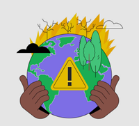
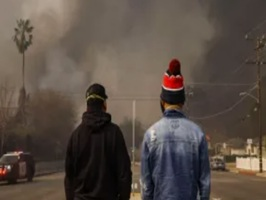

Causas de los Incendios Forestales
Actividad Humana: Son la causa de la gran mayoría de los incendios, destacando las quemas agrícolas descontroladas, fogatas o colillas mal apagadas e incendios intencionados para el cambio ilegal de uso de suelo.
Factores Climáticos: Las sequías prolongadas, altas temperaturas y vientos fuertes reducen la humedad de la vegetación y aceleran la propagación destructiva del fuego.
Requisitos del Fuego: El fenómeno requiere obligatoriamente de la combinación de calor, oxígeno y vegetación seca para poder manifestarse.
Impacto Geográfico: Afecta principalmente a las zonas boscosas y de matorrales del país durante las temporadas de estiaje y altas temperaturas.

Las consecuencias van mucho más allá de la pérdida de árboles, convirtiéndose en una crisis para las personas: Salud Pública: El humo deteriora gravemente la calidad del aire, provocando problemas respiratorios y cardiovasculares tanto en comunidades cercanas como en zonas urbanas. Crisis Económica: Las comunidades rurales pierden sus cultivos, ganado y fuentes de empleo, lo que aumenta la pobreza y llega a forzar el desplazamiento de familias. Escasez de Agua y Deslaves: Al destruirse el bosque, el suelo pierde la capacidad de absorber el agua de lluvia para llenar los mantos acquíferos, lo que provoca escasez de agua y aumenta el riesgo de deslaves peligrosos.
El combate y la prevención necesitan la colaboración de todos: Regulación Agrícola: Capacitar a los agricultores para usar alternativas al fuego o asegurar que realicen quemas controladas con brechas cortafuego y aviso previo. Concientización Ciudadana: Educar a la población para evitar dejar basura, botellas de vidrio (efecto lupa) o fogatas encendidas al visitar zonas forestales. Tecnología y Monitoreo: Usar alertas satelitales y torres de vigilancia para detectar el humo a tiempo, permitiendo que las brigadas actúen antes de que el fuego se vuelva incontrolable. Apoyo a Brigadistas: Equipar mejor a los bomberos forestales y organizar jornadas comunitarias para reforestar de forma planificada las zonas afectadas.